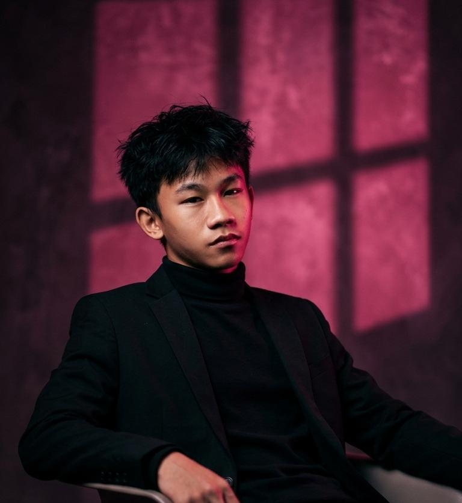

Berisi catatan aktivitas harian selama kegiatan PKL.
Anak magang yang sedang belajar, bermimpi, dan terus berkembang.

#SMKN 4 KOTA BEKASI
"Sedangg membangun skill melalui praktik langgung."
saya ahmad zaki maulana siswa smk 4 kota bekasi yang sedang membentuk diri di pt fortunet .
Website ini adalah ruang saya untuk berbagi pelajaran, dan inspirasi dari setiap langkah yang saya jalani.
Setiap hari adalah halaman baru dalam buku cerita saya.
Klik "lihat selengkapnya untuk melihat semua projek saya."
Terhubung lewat berbagai platform digital.